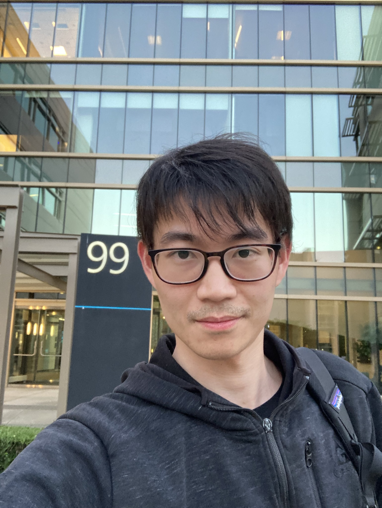

Senior Researcher, Microsoft Research AI Frontiers · PhD, Columbia University
I'm a Senior Researcher at Microsoft Research AI Frontiers, working on LLM agents, systems, and reinforcement learning. I completed my PhD at Columbia University in May 2025, advised by Prof. Eugene Wu.
My PhD work focused on the modern semantic layer for large join graphs in cloud data warehouses — building interactive dashboards, ML systems, and data-discovery tools on top of join graphs. Most of my later projects were rebuilt as LLM workflows. I refactored the abstraction behind those workflows into PocketFlow, a 100-line LLM framework that grew to 10K+ stars; on top of it I built a codebase-tutorial generator that has crossed 12K+ stars.
Research funded by the Google PhD Fellowship and the Avanessian Fellowship.
SIGMOD'27 PC · TaDA@VLDB'26 PC · DEEM@SIGMOD'26 PC · ICLR'26 Reviewer · TRL@ACL'25 PC · TaDA@VLDB'25 PC · DEEM@SIGMOD'24,'25 PC · ICML'25 Reviewer · TRL@NeurIPS'23,'24 PC · TaDA@VLDB'24 PC · GUIDEAI@SIGMOD'24 PC · DataPlat@ICDE'24 PC · DBML@ICDE'23,'24 PC.